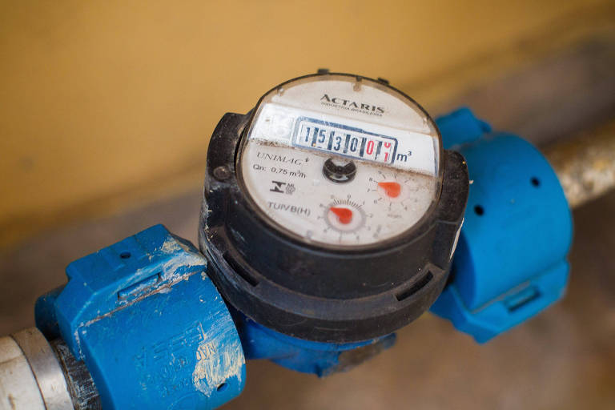
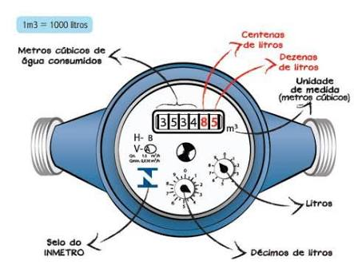
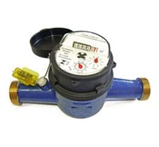
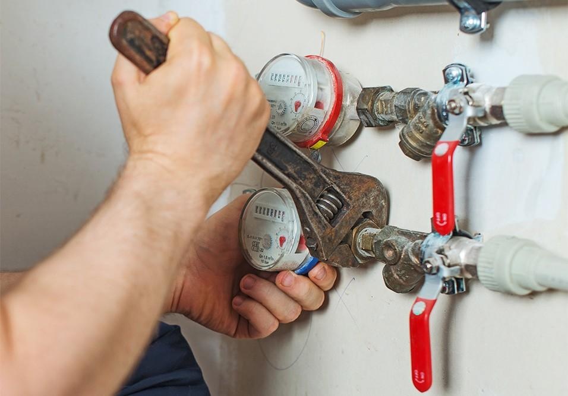

VOCÊ SABE COMO FUNCIONA O HIDRÔMETRO DE ÁGUA?
As águas percorrem uma jornada de quilômetros quando retiradas dos mananciais e rios para chegar até as nossas torneiras.
Temos conhecimento que muita coisa acontece no caminho dessa água. E uma parte muito importante para as companhias
de saneamento ocorrem nesse processo: A medição do consumo para posterior cobrança do que for utilizado. Para tal, é
utilizado o hidrômetro de água
O QUE É UM HIDRÔMETRO DE ÁGUA?
O hidrômetro de água pode ser descrito como um aparelho de precisão que mede e registra o consumo de água. Você talvez conheça ele como medidor ou relógio. Um ponto importante é que para diferentes tipos de clientes se utiliza faturamento e modos de medição diferentes.
O hidrômetro serve para uma cobrança justa, com base no que foi consumido. Podemos afirmar também que o mesmo evita desperdícios e colabora com a preservação do meio ambiente
Como muitos equipamentos, os hidrômetros de água possuem engrenagens e partes que sofrem desgastes ao longo do tempo. E isso prejudica obter uma medição correta. O usuário pode pedir a instalação de forma gratuita e em alguns casos sua substituição se identificada alguma avaria ou degradação no mesmo.
É necessário também se atentar com o cuidado do equipamento visto que violações, furtos ou adulteração podem levar a multas e até outras penalidades se for considerado crime.
COMO LER UM HIDRÔMETRO?
Você pode ler seu hidrômetro observando a sequência de números que aparecem e anotando-os. A sequência obtida contém os metros cúbicos, centenas de litros e dezenas de litros. Para verificar qual é o seu consumo diário, por exemplo, é só diminuir a leitura do dia anterior da leitura do dia atual. Observado isso, pode-se perceber o consumo exagerado e até detectar possíveis vazamentos.
Um exemplo disso é a técnica que consiste em fechar bem todas as torneiras, e todos os equipamentos que possam usar água, observando em seguida a posição do relógio de água. Após uma hora, verifica se há diferença entre a leitura atual e a posterior. Caso haja, provavelmente você tem um vazamento.
TIPOS DE HIDRÔMETROS DE ÁGUA
Existem vários tipos de medidores, que devem ser usados para diferentes clientes, vazões ou até temperatura da água. Toda projeção de hidrômetros leva em conta principalmente o fluido que vai medir, se tratando de temperatura da água. Porém não há necessidade em classificá-los em residencial, comercial ou industrial pois essas diferenças dizem respeito a vazão. E pode ser que um estabelecimento ou indústria use um medidor residencial, por exemplo. Os hidrômetros mais comuns têm uma hélice ou turbina na qual se posiciona um ou mais jatos de água movimentando-a. Após esse contato, o girar da hélice registra o movimento em um totalizador que indicará a quantidade em litros ou metros cúbicos. Normalmente esse registro é usado para muitas residências e serve para água fria. Existem modelos que funcionam com base na pressão que a água exerce saindo e entrando, registrando dessa forma o consumo.
Há porém medidores mais avançados que não possuem partes móveis e retiram o ar da contabilização. Esse modelo possui uma comunicação integrada que auxilia no controle de consumo, tendo que facilita a leitura. Registra também dados ao longo do tempo com uma leitura inteligente que possibilita melhorias na prestação dos serviços. E opera ainda com uma bateria que tem vida útil de 16 anos, em média, não tendo qualquer impacto na conta de energia elétrica. Vale ainda salientar que hidrômetros mecânicos são todos os sistemas que possuem transmissão mecânica. O que acontece é que uma turbina transfere os movimentos mecanicamente ao conjunto de engrenagens por um eixo que atravessa uma placa, separando a parte seca da parte molhada.
ERROS NO FUNCIONAMENTO
Nas condições normais que um hidrômetro pode operar temos a vazão nominal, sendo expressa em metros cúbicos por hora. Contudo, os hidrômetros podem ter uma medição abaixo do esperado, ineficaz, chamada submedição. Podemos citar como as causas mais comuns:
Portanto, para evitar erros de medição que vão influenciar no faturamento posteriormente, é feito uma previsão considerando o tipo do hidrômetro, consumo e sua respectiva vazão nominal. Se for identificado, por exemplo, que muitos hidrômetros estão próximos do fim da vida útil, a companhia de saneamento pode estabelecer um plano de hidrometração.
CONSEQUÊNCIAS DA FALTA DE HIDRÔMETROS
Temos em nosso país muitos municípios que ainda não possuem um plano de hidrometração. Isso significa dizer que muitos não possuem um sistema de medição do consumo. Esse último é o caso na cidade de Ouro Preto, que não possui hidrômetros em boa parte das ligações. Isso mesmo que você imaginou, a água não é cobrada! O que acontece por esse motivo é o consumo irracional de água. Chega ao ponto de 550 litros/dia por habitante, tendo em conta produção por habitantes. Se compararmos com a cidade vizinha Itabirito, onde há hidrômetros nas residências, o gasto é de 167 litros/dia.
Percebe-se que há um racionamento quando a conta tem que ser paga, e ainda assim, ambos estão acima da média recomendada pela Organização Mundial da Saúde (OMS) que é de 110 litros/dia por pessoa. O fato é que essa prática está levando a falta de água. Em setembro de 2018 foi registrado o uso da vazão mínima no sistema que abastece 60% da população, pois não se consegue mais suprir a necessidade da população devido a falta de chuva e o já citado consumo exagerado. É necessário que as autoridades compreendam a necessidade de um plano de hidrometração e a conscientização da população.
Como tem sido o consumo no seu município? Existe um plano de hidrometração? O que é necessário para otimizar o uso e faturamento de recursos?